Understanding Kdump and Linux Tracing Tools for Effective Kernel Debugging
Mentor: Qiao Zhao
Mentee: Wenkang Li / Wenkang Ji
Duration: 2-3 months
Format: Bi-weekly mentoring meetings
Background
This mentoring topic focuses on building a practical understanding of Linux kernel debugging workflows, especially around kdump, kexec, crash, and Linux tracing tools such as perf and ftrace.
The main goal is to improve the ability to diagnose kernel-related issues, especially issues that may interact with virtualization or KVM subsystems.
Mentoring Plan
• Understand **Kernel Dump / kdump** and **kexec**
• Learn how to use the **crash** tool for vmcore analysis
• Perform practical vmcore analysis
• Gain practical tracing and profiling skills with **perf** and **ftrace**
• Complete an end-to-end kernel debugging workflow
---
Meeting 1: Understanding kdump and kexec
Date: Dec 3, 2025
Target: Understand kdump and kexec
What is kdump?
kdump is the Linux kernel crash dumping mechanism. When the running kernel crashes, kdump uses a reserved crash kernel to save the memory image of the crashed system.
A typical dump file is saved as:
/var/crash/<host>-<timestamp>/vmcoreThe saved vmcore can then be analyzed using the crash utility.
What is kexec?
kexec allows Linux to boot directly into another kernel without going through the full firmware reboot process.
In the kdump workflow:
1. The normal kernel is running as the first kernel.
2. A second crash kernel is preloaded.
3. When the first kernel crashes, control is transferred to the second kernel.
4. The second kernel saves the dump file.
Example command:
kexec -l <kernel> \
--initrd=<initramfs> \
--command-line="<kernel cmdline>"kdump Configuration
Main configuration file:
/etc/kdump.confUseful hooks:
kdump_pre <binary | script>
kdump_post <binary | script>Restarting kdump may regenerate the kdump initramfs image:
systemctl restart kdumpTypical initramfs paths:
/boot/initramfs-5.14.0-645.el9.x86_64.img
/boot/initramfs-5.14.0-645.el9.x86_64kdump.imgTriggering a Kernel Crash
For controlled testing:
echo c > /proc/sysrq-triggerWarning: this command intentionally crashes the machine. Run it only in an isolated VM or test environment.
Common Kernel Failure Types
Type 1: System Panic
A full kernel panic stops the system and, if kdump is configured correctly, triggers dump collection.
Type 2: Oops
A kernel Oops usually indicates a kernel bug such as NULL pointer dereference or invalid memory access.
Common clues:
• Call trace
• Faulting instruction
• Related module name
• Panic behavior controlled by `kernel.panic_on_oops`
Type 3: Hung Task
A hung task means a kernel task has been blocked for too long.
Typical log source:
/var/log/messagesPossible causes:
• Insufficient system resources
• Kernel logic issue
• Lock contention
• Long I/O wait
• Scheduling starvation
Type 4: Soft Lockup and Hard Lockup
A soft lockup means a CPU stays in kernel mode for too long, but interrupts may still work.
A hard lockup means the CPU does not respond to interrupts.
Typical hard-lockup message:
hard lockup detected on CPU#---
Meeting 2: Using crash for vmcore Analysis
Date: Dec 17, 2025
Target: Understand and use crash
crash vs gdb
gdb -> user-space debugging
crash -> kernel-space vmcore debuggingTo analyze a vmcore, you need:
• the `vmcore` file
• the matching `vmlinux` file with debug symbols
Example:
crash /usr/lib/debug/lib/modules/<kernel-version>/vmlinux \
/var/crash/<timestamp>/vmcore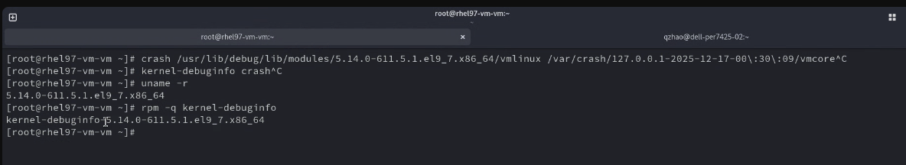
Debug Symbols
The vmlinux file with symbols usually comes from the kernel-debuginfo package.
Example path:
/usr/lib/debug/lib/modules/<kernel-version>/vmlinuxWithout matching debuginfo, stack traces and symbol resolution can be incomplete.
Basic crash Commands
System Summary
crash> sysThis command is useful for locating the crash reason.
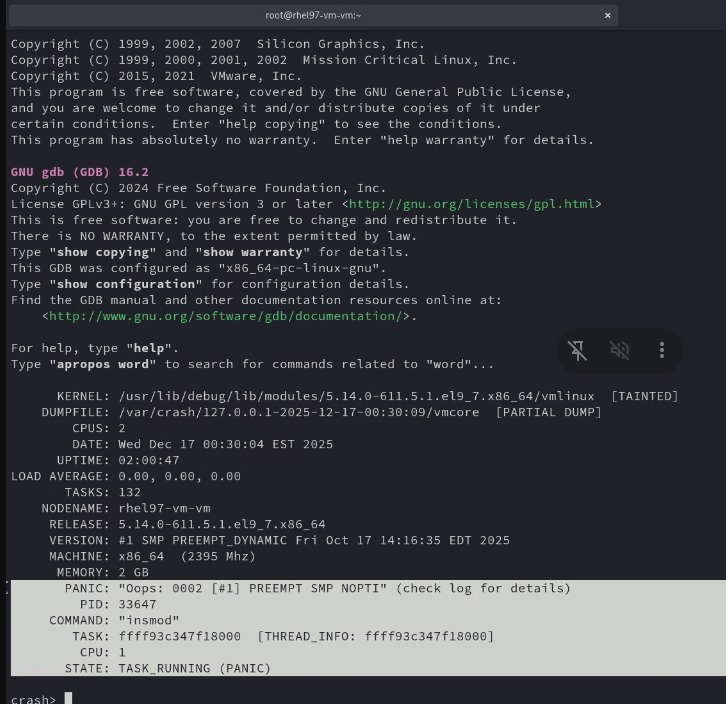
Backtrace
crash> btShow the current task backtrace.
For all CPUs:
crash> bt -a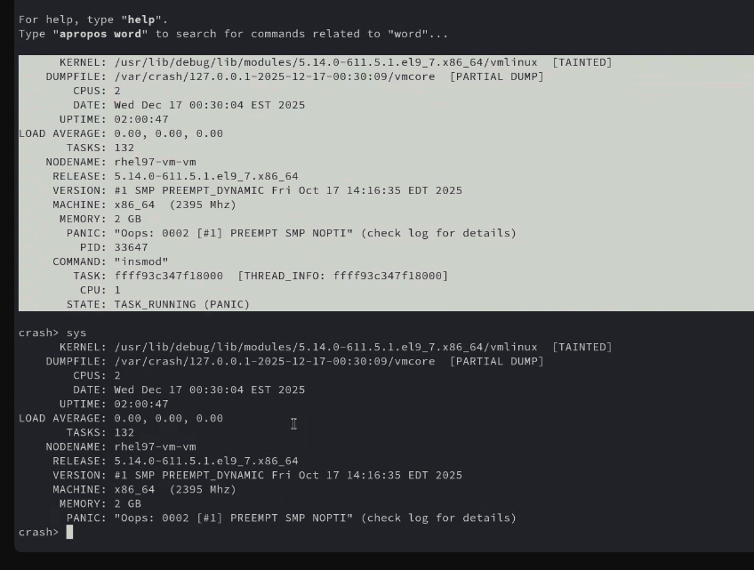
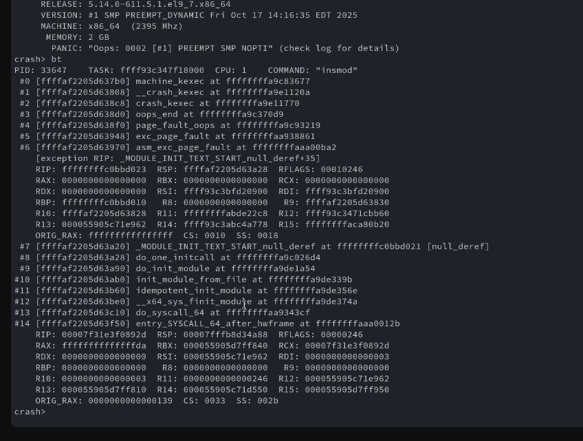
Process List
crash> psUse it to inspect tasks and locate suspicious or crashed processes.
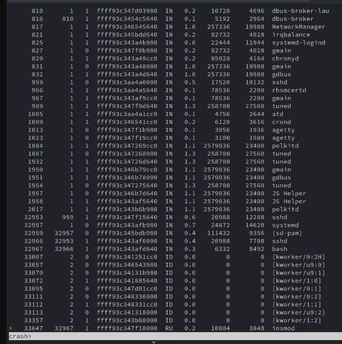
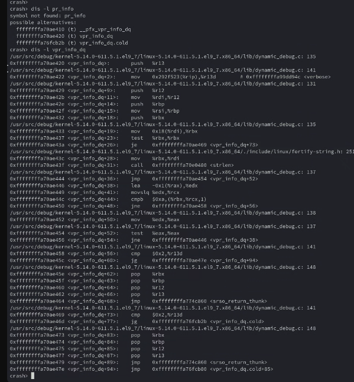
Memory Information
crash> kmem -iThis is useful when investigating OOM killer or memory pressure issues.
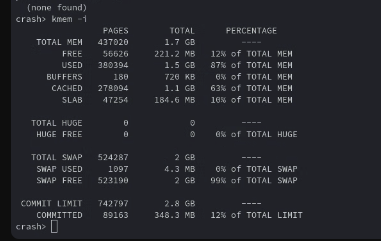
Disassemble with Source Line
crash> dis -l <symbol>This maps a faulting instruction back to source context when symbols are available.
Example: Oops Caused by NULL Pointer Dereference
Example source pattern:
int *ptr = NULL;
*ptr = 1234;This causes a NULL pointer dereference and may trigger a kernel Oops.
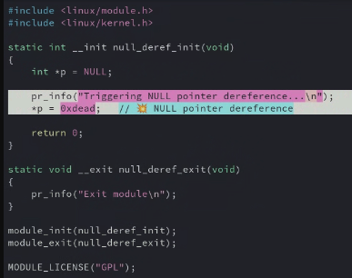
A typical analysis flow:
1. Run `crash> sys` to confirm the panic reason.
2. Run `crash> bt` or `crash> bt -a` to inspect the call trace.
3. Identify the crashing task and module.
4. Inspect registers and instruction pointer.
5. Use `dis -l` to map the faulting instruction to source.
6. Check `dmesg` or `/var/log/messages`.
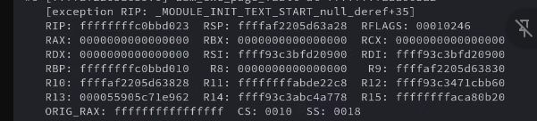
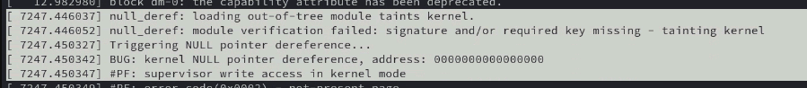
Panic-related sysctl Values
Useful sysctl entries:
sysctl kernel.panic_on_oops
sysctl kernel.hardlockup_panic
sysctl kernel.softlockup_panic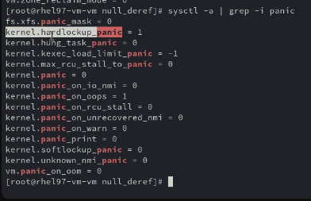
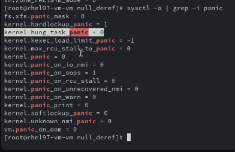
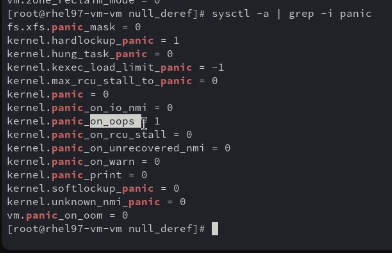
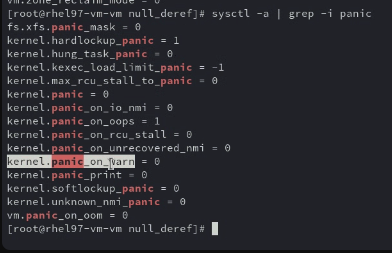
Runtime example:
sysctl -w kernel.panic_on_oops=1
sysctl -w kernel.hardlockup_panic=1
sysctl -w kernel.softlockup_panic=1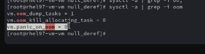
Other crash Notes
crash can also expose possible alternatives around functions and symbols:
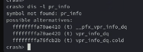
When the kernel is still alive, user-space applications can usually be debugged directly. When the kernel is dead, the practical options are usually kdump or NMI-based dump collection.
---
Meeting 3: Kernel Tracing with perf and ftrace
Date: Jan 28, 2026
Target: Understand other kernel tracers and how they work
Live Debugging vs Postmortem Debugging
Live mode -> the system is still running
Postmortem -> analyze vmcore after crashperf and ftrace are usually live debugging and profiling tools.
Kernel Tracing Commonality
Linux tracing tools share several lower-level mechanisms such as tracepoints, kprobes, uprobes, perf events, and ftrace function hooks.
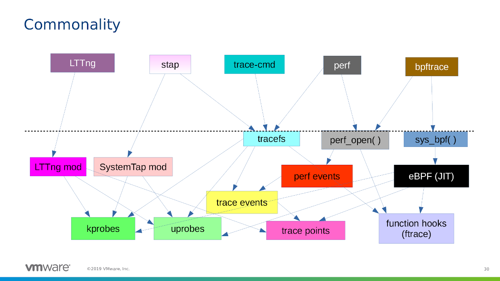
perf Overview
perf is a Linux performance analysis tool.
It can be used to inspect:
• CPU usage
• I/O behavior
• Filesystem activity
• Memory behavior
• Process performance
• Context switches
• Page faults
• CPU cycles
• Branch misses
Reference:
https://perf.wiki.kernel.org/index.php/TutorialPMU
PMU stands for Performance Monitoring Unit.
It provides hardware counters for low-level performance events, such as:
• CPU cycles
• Instructions
• Branches
• Branch misses
• Cache misses
Common perf Commands
System-wide statistics:
perf stat -a -- sleep 10Monitor a specific process:
perf stat -a -p <pid> -- sleep 5Trace a specific process:
perf trace -p <pid> -- sleep 5Optional summary mode:
perf trace -s -p <pid> -- sleep 5Real-time hotspot view:
perf topSort by command and shared object:
perf top --sort comm,dso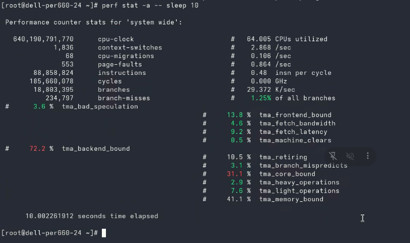
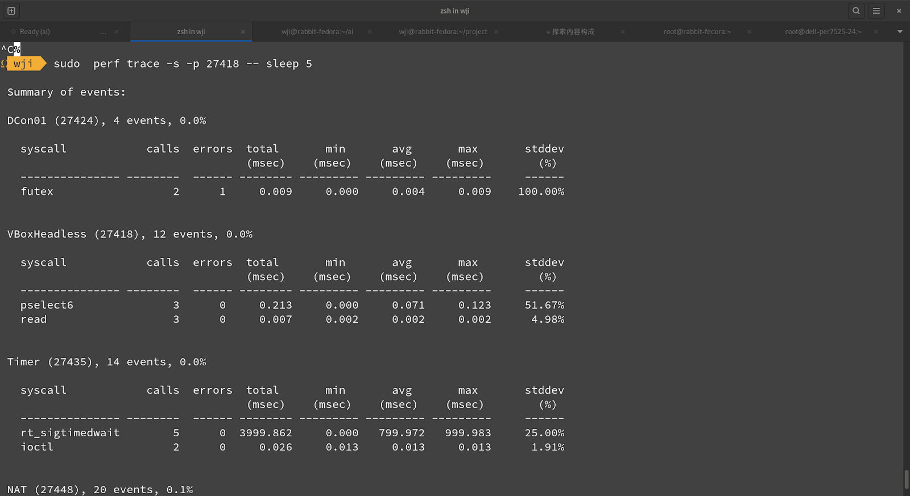
Important perf Metrics
| Metric | Meaning |
|---|---|
| `cpu-clock` | CPU runtime related metric |
| `context-switches` | Scheduling activity and overhead |
| `page-faults` | Memory fault behavior; lower is often better |
| `cycles` | CPU cycle counter |
| `branches` | Branch instruction count |
| `branch-misses` | Failed branch prediction count |
ftrace Overview
ftrace is a Linux kernel tracing framework.
Common mount points:
/sys/kernel/tracing
/sys/kernel/debug/tracing/sys/kernel/tracing is the standard path.
/sys/kernel/debug/tracing is retained for backward compatibility.
Reference:
https://www.kernel.org/doc/Documentation/trace/ftrace.txtTypical ftrace use cases:
• Locate kernel latency
• Trace function calls
• Debug scheduling problems
• Inspect interrupt behavior
• Investigate specific kernel execution paths
---
Meeting 4: Kernel Panic and Lockup Experiments
Date: Mar 26, 2026
sysctl Configuration
Defaults discussed:
sysctl kernel.panic_on_oops # 1
sysctl kernel.hardlockup_panic # 1
sysctl kernel.softlockup_panic # 0Set values:
sysctl -w kernel.panic_on_oops=1
sysctl -w kernel.hardlockup_panic=1
sysctl -w kernel.softlockup_panic=1Demo: Trigger Kernel Oops
#include <linux/module.h>
#include <linux/kernel.h>
static int __init oops_demo_init(void)
{
int *ptr = NULL;
pr_info("Triggering kernel Oops...\n");
*ptr = 1234; // NULL pointer dereference -> Oops
return 0;
}
static void __exit oops_demo_exit(void)
{
pr_info("exit\n");
}
module_init(oops_demo_init);
module_exit(oops_demo_exit);
MODULE_LICENSE("GPL");Demo: Trigger Hard Lockup
#include <linux/module.h>
#include <linux/kernel.h>
#include <linux/interrupt.h>
static int __init hard_lockup_init(void)
{
pr_info("Triggering hard lockup...\n");
local_irq_disable();
while (1)
cpu_relax();
return 0;
}
static void __exit hard_lockup_exit(void)
{
}
module_init(hard_lockup_init);
module_exit(hard_lockup_exit);
MODULE_LICENSE("GPL");Demo: Trigger NMI Watchdog Lockup
#include <linux/module.h>
#include <linux/kernel.h>
static int __init nmi_lockup_init(void)
{
pr_info("Triggering NMI watchdog lockup...\n");
preempt_disable();
while (1)
cpu_relax();
return 0;
}
module_init(nmi_lockup_init);
MODULE_LICENSE("GPL");Demo: Slab Overflow
#include <linux/module.h>
#include <linux/kernel.h>
#include <linux/slab.h>
static int __init slab_overflow_init(void)
{
char *buf;
pr_info("allocating 32 bytes\n");
buf = kmalloc(32, GFP_KERNEL);
memset(buf, 'A', 512); // overflow
pr_info("freeing corrupted object\n");
kfree(buf); // allocator may detect corrupted metadata
pr_info("done\n");
return 0;
}
module_init(slab_overflow_init);
MODULE_LICENSE("GPL");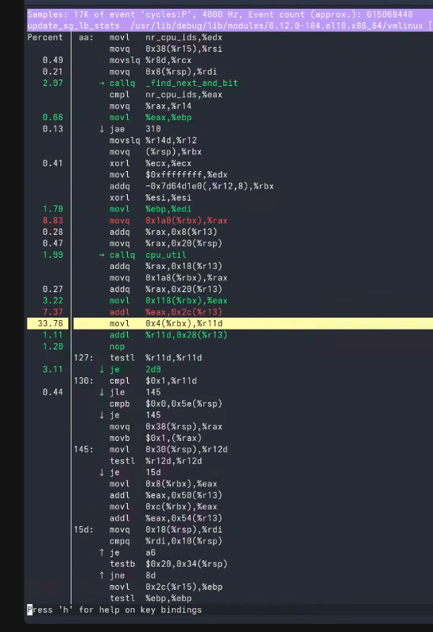
Warning: these examples intentionally trigger kernel failures. Run them only in an isolated VM or dedicated test environment.
---
Practical Kernel Debugging Workflow
1. Enable kdump
systemctl status kdump2. Capture or Reproduce the Failure
Controlled test:
echo c > /proc/sysrq-triggerReal issue collection:
/var/crash/<timestamp>/vmcore
/var/log/messages
dmesg3. Load vmcore with crash
crash <vmlinux> <vmcore>4. Identify Panic Reason
crash> sys5. Inspect Backtrace
crash> bt
crash> bt -a6. Check Processes
crash> ps7. Check Memory State
crash> kmem -i8. Map Faulting Address to Source
crash> dis -l <symbol>9. Use Live Tracing When the System Is Still Running
perf top
perf stat -a -- sleep 10
perf trace -p <pid> -- sleep 5For deeper kernel tracing:
cd /sys/kernel/tracing---
Summary
This mentoring program covered a practical Linux kernel debugging path:
• `kdump` captures the vmcore after a kernel crash.
• `kexec` switches into the crash kernel.
• `crash` supports postmortem vmcore analysis.
• `perf` helps analyze live system performance.
• `ftrace` provides detailed kernel tracing capability.
• sysctl panic settings control whether Oops, soft lockup, or hard lockup events trigger a panic.
• Controlled kernel modules can reproduce Oops, lockup, and memory corruption scenarios in a lab.
Together, these tools provide a practical foundation for debugging kernel failures, performance problems, and low-level system behavior.